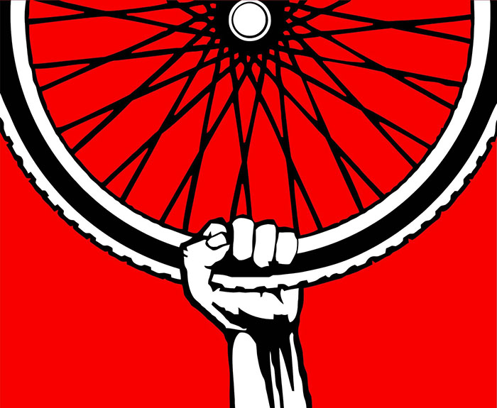

Decir que la bicicleta es revolucionaria puede parecer sólo una frase de quien vanagloria aquello en lo que cree. Pero tal vez sea un poco más que esto.
Si bien es cierto que un ejército en bicicleta estaría en serios problemas ante un ejército transportado en F-117s, también es cierto que el ritmo de la bicicleta, la vida que produce a partir de su uso, no es compatible con la reproducción del sistema capitalista. Por eso la bicicleta se marginaliza, se banaliza, se limita, se ubica en un plano “improductivo” y esta se vuelve accesoria. En su lugar se encuentra el ícono de la movilidad del sujeto moderno, como lo es el automóvil, sobre el cual patina la circulación capitalista de nuestras sociedades de consumo. El estilo de vida del capitalismo tardío necesita del tipo de movilidad que le brinda el automóvil. Depende de él.
Así que la bicicleta, en la dinámica de la asunción del poder popular en términos de movimiento, se confronta con el automóvil, no sólo en los episodios cotidianos en los que la violencia de la circulación urbana de vehículos intenta reducir a su mínima expresión el desplazamiento de la bicicleta por las “vías reservadas para motores”, sino que también lo hace contra el propio sistema que lo sostiene, pues toca la esencia de la “indispensable” movilidad maquinizada capitalista. La deserción de los automóviles hacia formas de desplazamiento colectivo y organizado en torno a la bicicleta, crea y produce nuevos sujetos, nuevos cuerpos, nuevas relaciones intersubjetivas y con el espacio, mientras que simultáneamente niega, destruye y deconstruye el cordón umbilical que se ha establecido entre el sujeto y la máquina, esa relación de dependencia que trata de pulverizar el poder inmanente de los cuerpos/sujetos. Es parte de la dialéctica revolucionaria creación-destrucción. La bicicleta es un par de ruedas sobre las que se desliza la utopía transmoderna.
Hay seis factores que nos muestran cómo la bicicleta se inserta en la dialéctica revolucionaria creación-destrucción. Seis factores de por qué la bicicleta es un instrumento revolucionario:
1. Velocidad de los motores para el consumo capitalista: la bicicleta ralentiza al capital
El movimiento en el capitalismo tardío va a altas velocidades. Es lo común. Y el objetivo es incrementar dicha velocidad cada vez más. La velocidad en sí, es un valor social, que determina prestigio y poder. Pero, este incremento de la rapidez en el desplazamiento no se fundamenta en una necesidad social, sino en un requerimiento del capital para su despliegue global: la velocidad de las máquinas motorizadas responde a la intensificación del consumo en la globalización neoliberal.
Recordemos que la producción capitalista no comprende sólo la producción de mercancías, sino la indispensable circulación de las mismas y de los cuerpos que las consumen. Acelerar la producción requiere de una aceleración del consumo, y una aceleración del consumo necesita una aceleración de la velocidad y el alcance del movimiento. ¿Necesitamos viajar y desplazarnos a 100 kms/h, o a 80 o a 50 kms/h? ¿En realidad lo necesitamos? Cuando el tiempo es dinero, entonces la relación espacio-tiempo determinada por el movimiento necesita estructurarse en torno a las necesidades sistémicas del capital. La penetración geográfica del neoliberalismo requiere un flujo veloz de los factores que posibilitan las nuevas formas de imperialismo. Y esa velocidad maquinizada no sólo se reproduce por medio del automóvil (y también de super barcos y super aviones), sino que también se inocula en los sujetos, creando una aceleración psicobiológica de los cuerpos. El hombre moderno siempre lleva prisa, siempre está en una carrera contra el tiempo, y esta carrera pasó de ser un medio, a ser un fin. ¿Eres tú uno de aquellos que siempre lleva prisa sin importar el día ni la hora?
La velocidad de la bicicleta no es compatible con la velocidad requerida para la reproducción del capital globalizado. Su fuerza es la de las piernas de los sujetos que la conducen. Su velocidad es la velocidad propia y producida por los propios cuerpos. La asunción masiva de la bicicleta pone en aprietos el proceso de acumulación neoliberal, porque ralentiza el capital, y el capitalismo sin crecimiento no puede sobrevivir. El uso generalizado de la bicicleta por parte de los ciudadanos y ciudadanas conscientes y en posición activa de poder se inserta en la crítica y las propuestas de “decrecimiento” y “post-desarrollo” (o des-desarrollo). La bicicleta se articula en el decrecimiento de la velocidad, en el des-desarrollo de la movilidad. En un mundo en crisis sistémica, detener la velocidad depredadora y absurda del capitalismo es dar un paso sintético revolucionario en pro de una alternativa al sistema devorador del capital.
2. La circulación estructurada en la modernidad: la bicicleta libera y democratiza el movimiento
Quienes vivimos en la ciudad, comprendemos al ver a nuestro alrededor, que el espacio geográfico urbano está desarrollado en torno al automóvil. Este se encuentra en la parte más alta de la jerarquía moderna del movimiento. Así vemos la estrecha relación entre espacio y poder: una arquitectura para el control y la regulación de sujetos y cuerpos.
El automóvil, trae consigo una cadena de dependencia al espacio geográfico estructurado en torno al capitalismo, que ata a los sujetos a su dinámica y los conecta con otras formas de consumo y desplazamiento favorables a ella. Esto implica que el tránsito vehicular está previamente estructurado y planificado, y determina irremediablemente cuál es el camino por donde circulan los sujetos. Nuestra movilidad se hace esclava de la máquina motorizada, que sólo puede circular por las autopistas preestablecidas. La libertad de movimiento queda así mermada: el sujeto es preso de la máquina que creía que lo iba a liberar. El encierro de las colas de las metrópolis, de las urbes medianas, e incluso de los pequeños pueblos penetrados por los procesos de modernización colonial, en un mundo cada vez más desruralizado, constituyen un control y/o limitación del movimiento, producto de la masificación del consumo de automóviles individuales. Aquí se expresa la contradicción entre la promesa de super-velocidad y la pérdida de libertad de movimiento.
La bicicleta, en cambio, puede ser casi tan libre como el propio cuerpo. Puede burlar las estructuraciones del espacio cuadriculado, las estrecheces de los encierros metropolitanos, puede girar, saltar, ser cargada, esquivar, ser aparcada prácticamente en cualquier sitio. Se rompe así la esclavitud que implica la posesión y uso del automóvil y toda su cadena de consumo y utilización. Es una forma de democratizar el movimiento, usando una máquina de energía humana que se conecta con nuestro cuerpo, que armoniza con él, en vez de representar una cadena alienante. Se trata de autogestionar nuestro movimiento, una forma de asunción de nuestro poder inmanente domesticado por el sistema capitalista.
Es claro que esto se debe articular con una apropiación de la propia producción de las bicicletas, así como el asunto de reparar las ya existentes y democratizar el conocimiento referido a este tipo de máquinas.
3. El control sobre los cuerpos dóciles para la dominación: la bicicleta se reapropia de la fuerza y el potencial físico, domesticado por la vida automatizada
Todo se quiere automatizar. La tecnología, en su afán de ser un vehículo del consumo exacerbado favorable a la acumulación de capital, provee a los cuerpos de nuevos y más sofisticados mecanismos de automatización del movimiento. De esta forma estos cuerpos se van apaciguando, y se hacen dependientes de la energía de las máquinas motorizadas. El potencial físico, la fuerza biológica del ser es transferida a la cadena de la mecanización motriz, deprimiendo la energía propia de los cuerpos y docilizándolos para mantenerlos atados la dinámica maquinizada, insustancial y superflua del capitalismo tardío. El automóvil se convierte en una “necesidad” para la movilidad.
La bicicleta desdociliza el cuerpo. Es la asunción del poder inmanente en el movimiento. Una vez más: una autogestión de la movilidad, una autonomía biopolítica. Y a su vez, impulsa el rompimiento con la dinámica parasitaria que provoca el capitalismo en el cuerpo. Así, la bicicleta abre camino hacia las nuevas posibilidades de liberación de los controles biopolíticos del sistema, mientras que se reapropia de la fuerza y el potencial físico domesticado por la vida automatizada. La bicicleta reproduce la insurgencia de los cuerpos.
4. Emisiones de Gases de Efecto Invernadero y Monopolios de la energía capitalista: la bicicleta es energía de la vida para la vida
La energía es fundamental para comprender el patrón organizativo de una sociedad. El sistema capitalista tiene en el siglo XX, el siglo del petróleo (barato hasta mediados de los 70’s). Esta es la sangre que circula por sus arterias. Y de dicha fuente energética se desprenden dos factores fundamentales que inciden de manera importante en la crisis sistémica que atravesamos: primero, estas fuentes son controladas por élites globales (sean transnacionales, o bien Estados productores) y no por sus pueblos; y segundo, son altamente contaminantes.
Estos dos factores son determinantes para comprender por qué la bicicleta es un instrumento para producir una circulación revolucionaria. El sistema capitalista en crisis, depende del mantenimiento de un alto consumo, que a su vez depende de una circulación muy acelerada, lo que a su vez depende de un flujo constante y masivo de combustibles fósiles para alimentar las máquinas motorizadas. Pues bien, el control de esta energía, como ya lo dijimos, está en manos de élites globales, quienes no sólo cuentan con un gran control económico, sino que por ende, este control también es político. La bicicleta, implica una reapropiación de la energía, y un corte con el cordón umbilical petrolero. Es una democratización de la misma, lo que a su vez produce un agujero en el consumo de energías fósiles y por consiguiente, una afectación a los grandes capitales petroleros. Cualquiera tiene acceso a la energía de sus propias extremidades. A menos que hagan como ocurrió en Cochabamba con el agua de lluvia, y nos privaticen nuestras propias piernas.
Por otro lado la crisis ecológica, en la que el Calentamiento Global es su peor y más grave problema, tiene en el automóvil el principal emisor de Gases de Efecto Invernadero. Las proyecciones de aumento de la temperatura del planeta y sus consecuencias esperadas son escalofriantes. Y la bicicleta ofrece una movilidad con 0% de emisiones de GEI. La bicicleta entonces aparece no sólo como una alternativa limpia, sino como un mecanismo para excluir las máquinas contaminantes y detener las emisiones de estos gases provocados por ellas y sus fuentes de energía fósiles controladas por monopolios globales. Por eso la bicicleta es energía de la vida para la vida.
5. La estética moderna contra las manifestaciones de lo salvaje: la bicicleta abre el camino para romper con el disciplinamiento que produce la formalidad
Sudar, sudar y sudar. Algo que el sujeto moderno evita constantemente. La domesticación de la barba es una pequeña expresión de la domesticación de la naturaleza. Así ocurre con la devastación de la Madre Tierra en nombre del desarrollo (capitalista), con el racismo como forma de colonizar al “salvaje”, y con la estética burguesa pulcra que busca domar, aplanar y regular los rastros de “animalidad” de los espacios y de los cuerpos. El automóvil viene equipado con su respectivo aire acondicionado, que va acorde con el aspecto que corresponde al propietario de un vehículo automotor y de su estilo de vida. La bicicleta, como vehículo abierto y motorizado por el propio cuerpo, despliega toda esa “animalidad” del movimiento, que al incorporarse a la circulación cotidiana, tiene importantes implicaciones sobre la estética del sujeto. En el capitalismo, el ciclista aparece generalmente como un deportista, y su estética se plantea conforme a la actividad “recreativa” (improductiva en términos de trabajo capitalista) que este tiene: debe seguir al estereotipo del Tour de Francia.
La bicicleta como instrumento de circulación constante y cotidiano, lleva implicada un estilo de vida que da mucha mayor cabida a la informalidad, cuestiona el cuidado aséptico e impecable del sujeto regularizado para las relaciones sociales porque la bicicleta abre el camino para romper con el disciplinamiento que produce la formalidad. La bicicleta es una de las vías hacia la liberación del control estético moderno porque su dinámica “salvaje” se riñe con la rigidez del sujeto modelo.
6. El estado psicopatológico del automovilista: la bicicleta rompe el encierro y la aceleración alienante
Esto en pocas palabras significa: el automóvil y la estructura de circulación que hace posible su existencia, enferman. El doble encierro del automóvil: el encierro dentro de la cabina y el encierro en la vialidad preestablecida para su circulación, son el caldo de cultivo para la reproducción de formas de violencia. Todas las frustraciones que produce la metrópolis se maximizan en el desplazamiento citadino en carro, el cual consigue un ambiente sumamente hostil, de competencia exacerbada, y de una sensación de aceleración mental, que multiplican las expresiones neuróticas de los sujetos. Este es claramente el lado oscuro del control biopolítico de las personas. Son, más que consecuencias, mecanismos de alienación que producen una ciudadanía psicológicamente enferma, presa fácil para adormecer la producción política-crítica de los sujetos, y reproducir la legitimación del status quo.
La bicicleta supone un paso al costado de esta dinámica enfermiza. Rompe con el encierro y abre una perspectiva sana cuerpo-mente en la que la libertad de movimiento y el despliegue de la fuerza física, no sólo son válvulas de escape de las frustraciones y el stress que generan las metrópolis sobre las personas, sino que origina la producción de una subjetividad autogestionada, mucho más en contacto con su cuerpo y sus posibilidades de asunción de poder propio.Dicho esto, queremos advertir que la bicicleta es revolucionaria sólo si se piensa y utiliza orgánicamente con todas las formas de resistencia y producción de alternativas al moderno sistema-mundo capitalista. El uso masivo, colectivo e incluso organizado de la bicicleta debe inscribirse en la construcción de un proyecto descolonizado, que impulse otros patrones alternativos de vida. No dejes para mañana lo que puedes pedalear hoy.
Bicicleta o barbarie.
Netwar y Movimientos antisistémicos
Publicaco originalmente en http://forajidosdelanetwar.blogspot.cl/ el 30 de mayo de 2011 por Emiliano Teran Mantovani


{kind=link}
{kind=link}
{kind=link}
{kind=link}
{kind=link}
{kind=link}
{kind=link}
{kind=link}
{kind=link}
{kind=link}
{kind=link}
{kind=link}
{kind=link}
{kind=link}
{kind=link}
{kind=link}
{kind=link}
{kind=link}
{kind=link}
{kind=link}